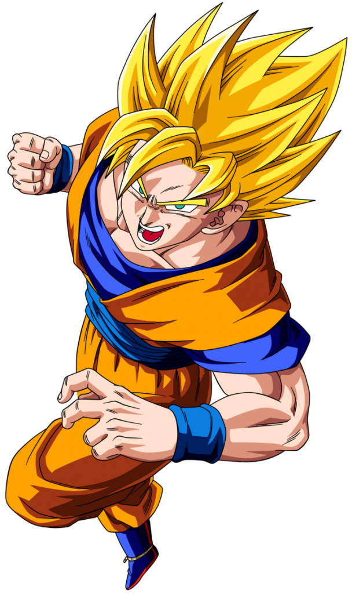
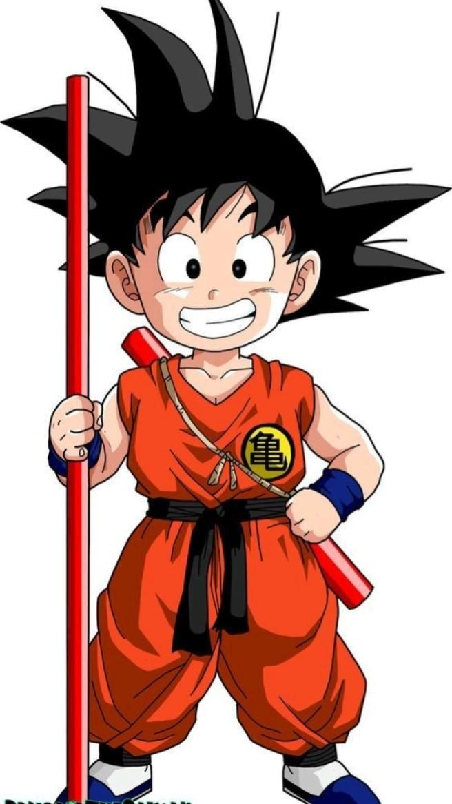
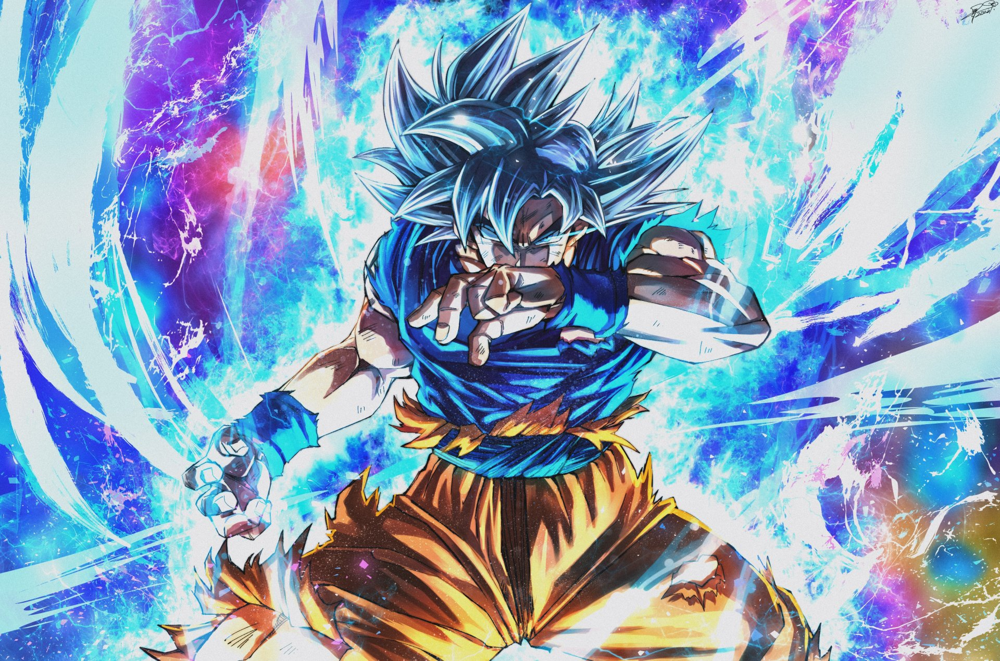
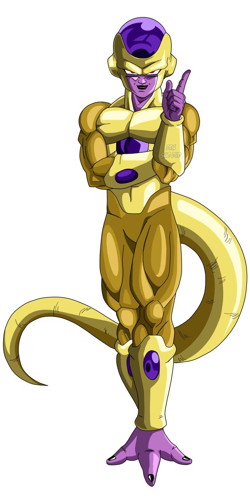
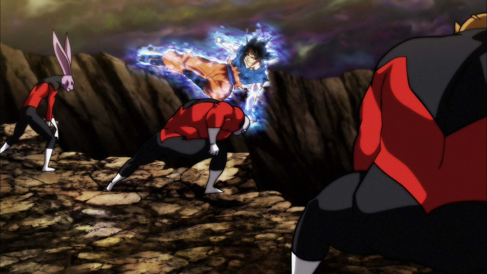

Historia
El Nacimiento de un Ícono:Goku Goku es el protagonista de la serie Dragon Ball, creada por Akira Toriyama en 1984 (manga) y adaptada al anime en 1986. Su nombre real es Kakarotto (Kakarot) y pertenece a la raza guerrera Saiyajin del planeta Vegeta. Para que conozcán mas sobre Goku

El Clima Social:
el clima en el que nació En los años 80, Japón vivía el auge del manga y el anime. Series como: Saint Seiya Hokuto no Ken dominaban con historias más violentas y héroes serios. Pero Dragon Ball rompió el molde al mezclar:1-Artes marciales
2-Humor
3-Aventuras
4-Superación personal
Goku representaba algo diferente:
1-Pureza
2-Perseverancia
3-Inocencia
4-Amor por la pelea justa En Latinoamérica (años 90), durante crisis económicas y cambios sociales, Goku se convirtió en símbolo de esfuerzo y esperanza.
La Fórmula Ganadora:¿Por qué Goku funciona tan bien?
Nunca pelea por odio.
Valora a sus amigos.
Se levanta después de cada derrota.
Representa el “esfuerzo supera al talento”.
Toriyama combinó:
Peleas épicas
Transformaciones impactantes
Rivales memorables
Humor ligero
Resultado: fenómeno mundial.
El Legado:Más de 260 millones de copias del manga vendidas.
Inspiró a animes como:
Naruto
One Piece
Bleach
Figura en eventos globales.
Ha aparecido en videojuegos, películas y colaboraciones internacionales.
En 2015 fue embajador oficial de los Juegos Olímpicos de Tokio.
Goku es sinónimo de anime.
Información
- Nombre real: Kakarotto
- Nombre adoptivo: Son Goku
- Raza: Saiyajin
- Planeta de origen: Vegeta
- Ocupación: Guerrero / Protector de la Tierra
- Maestro principal: Maestro Roshi
- Técnicas destacadas: Kamehameha, Genkidama, Teletransportación
- Estado: Vivo
Ficha Técnica
| Dato | Información |
|---|---|
| Primera aparición | 1984 (Manga) |
| Creador | Akira Toriyama |
| Editorial | Shueisha |
| Género | Acción, Aventura, Artes marciales |
| Altura | 1.75 m (adulto) |
| Familia | Chi-Chi (esposa), Gohan y Goten (hijos) |
Registro de Fans
Galería



